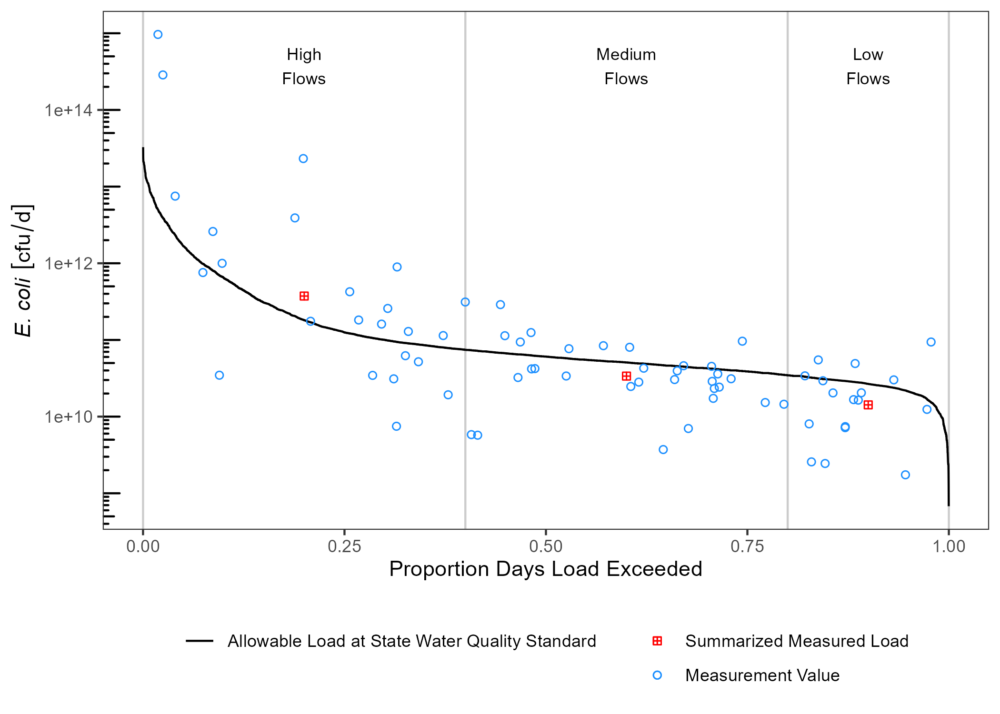

ldc provides automated and fairly opinionated functions for generating pollutant load duration curves (LDCs) in freshwater streams. Due to the automated nature, there isn’t much ability to adjust methodology or customize the generated LDCs since much of the calculation is abstracted away from the user.
ldc has three major functions:
calc_ldctakes and input dataset of matched flow and pollutant concentrations to generate a table with exceedance probabilities grouped by user specified break points.summ_ldcuses the output fromcalc_ldcto generate a summary dataframedraw_ldcuses the output from both functions to generate a LDC figure as a ggplot object.
Installation
ldc is currently on Github. First install the remotes package then install ldc from Github:
remotes::install_github("TxWRI/ldc")Example
An example using the data in the ldc package is shown below.
Setup and format data
library(ldc)
library(dplyr)
library(units)
library(ggplot2)
## optional packages
library(twriTemplates)
## this will calculate a ldc for indicator bacteria
## ldc uses the unit package to facilitate unit conversions
## we need to make the cfu unit first, since it isn't included
## in the units package
install_unit("cfu")
## format the data for use in ldc
tres_palacios <- as_tibble(tres_palacios) %>%
## flow must have units, here is is in cfs
mutate(Flow = set_units(Flow, "ft^3/s")) %>%
## pollutant concentration must have units
mutate(Indicator_Bacteria = set_units(Indicator_Bacteria, "cfu/100mL"))
tres_palacios
#> # A tibble: 7,671 x 4
#> site_no Date Flow Indicator_Bacteria
#> <chr> <date> [ft^3/s] [cfu/100mL]
#> 1 08162600 2000-01-01 0.84 NA
#> 2 08162600 2000-01-02 3 NA
#> 3 08162600 2000-01-03 3.4 NA
#> 4 08162600 2000-01-04 2.6 NA
#> 5 08162600 2000-01-05 1.6 NA
#> 6 08162600 2000-01-06 3.2 NA
#> 7 08162600 2000-01-07 11 NA
#> 8 08162600 2000-01-08 17 NA
#> 9 08162600 2000-01-09 22 NA
#> 10 08162600 2000-01-10 18 NA
#> # ... with 7,661 more rowsCalculate exceedance probability
## specify the allowable concentration
allowable_concentration <- 126
## set the units
units(allowable_concentration) <- "cfu/100mL"
## calculate the exceedance probabilities along with
## allowable pollutant loads and measured pollutant loads
## at given probabilities
df_ldc <- calc_ldc(tres_palacios,
Q = Flow,
C = Indicator_Bacteria,
allowable_concentration = allowable_concentration)
df_ldc
#> # A tibble: 7,671 x 9
#> site_no Date Flow Indicator_Bacteria Daily_Flow_Volume Daily_Load
#> <chr> <date> [ft^3/s] [cfu/100mL] [100mL/d] [cfu/d]
#> 1 08162600 2000-01-01 0.84 NA 20551235. NA
#> 2 08162600 2000-01-02 3 NA 73397266. NA
#> 3 08162600 2000-01-03 3.4 NA 83183569. NA
#> 4 08162600 2000-01-04 2.6 NA 63610964. NA
#> 5 08162600 2000-01-05 1.6 NA 39145209. NA
#> 6 08162600 2000-01-06 3.2 NA 78290417. NA
#> 7 08162600 2000-01-07 11 NA 269123310. NA
#> 8 08162600 2000-01-08 17 NA 415917843. NA
#> 9 08162600 2000-01-09 22 NA 538246620. NA
#> 10 08162600 2000-01-10 18 NA 440383598. NA
#> # ... with 7,661 more rows, and 3 more variables: Allowable_Daily_Load [cfu/d],
#> # P_Exceedance <dbl>, Flow_Category <fct>Summarize data
df_sum <- summ_ldc(df_ldc,
Q = Flow,
C = Indicator_Bacteria,
Exceedance = P_Exceedance,
groups = Flow_Category,
method = "geomean")
df_sum
#> # A tibble: 3 x 6
#> Flow_Category Median_Flow Median_P Geomean_C Median_Daily_Fl~ Median_Flow_Load
#> <fct> [ft^3/s] <dbl> [cfu/100mL] [100mL/d] [cfu/d]
#> 1 High Flows 58.3 0.201 259. 1426353543. 369892807260.
#> 2 Medium Flows 16.4 0.602 83.6 401238389. 33559966287.
#> 3 Low Flows 8.6 0.901 67.1 210405497. 14122654264.Plot LDC
draw_ldc(df_ldc,
df_sum,
y_lab = expression(paste(italic("E. coli"))),
label_nudge_y = log10(1000)) +
scale_y_log10() +
annotation_logticks(sides = "l") +
twriTemplates::theme_TWRI_print() +
theme(legend.title = element_blank(),
legend.direction = "vertical")
Units
ldc relies on the units package to facilitate unit conversions and tracking of units across variables. This is handy if we want to transform units on the fly. In the above summary table, median daily flow volume is reported in units of 100mL/day. This isn’t a logical unit to communicate, lets change it to million. gallons/day.
df_sum %>%
mutate(Median_Daily_Flow_Volume = set_units(Median_Daily_Flow_Volume, "1E6gallons/day")) -> df_sum
df_sum
#> # A tibble: 3 x 6
#> Flow_Category Median_Flow Median_P Geomean_C Median_Daily_Fl~ Median_Flow_Load
#> <fct> [ft^3/s] <dbl> [cfu/100mL] [1E6gallons/d] [cfu/d]
#> 1 High Flows 58.3 0.201 259. 37.7 369892807260.
#> 2 Medium Flows 16.4 0.602 83.6 10.6 33559966287.
#> 3 Low Flows 8.6 0.901 67.1 5.56 14122654264.cfu/day is a really big number. We can convert that to billion cfu/day.
df_sum %>%
mutate(Median_Flow_Load = set_units(Median_Flow_Load, "1E9cfu/day")) -> df_sum
df_sum
#> # A tibble: 3 x 6
#> Flow_Category Median_Flow Median_P Geomean_C Median_Daily_Fl~ Median_Flow_Load
#> <fct> [ft^3/s] <dbl> [cfu/100mL] [1E6gallons/d] [1E9cfu/d]
#> 1 High Flows 58.3 0.201 259. 37.7 370.
#> 2 Medium Flows 16.4 0.602 83.6 10.6 33.6
#> 3 Low Flows 8.6 0.901 67.1 5.56 14.1If we want to plot these, we also need to convert the df_ldc variables to matching units.
df_ldc %>%
mutate(Daily_Load = set_units(Daily_Load, "1E9cfu/day"),
Allowable_Daily_Load = set_units(Allowable_Daily_Load, "1E9cfu/day")) -> df_ldcUpdated units will carry over to the plot:
draw_ldc(df_ldc,
df_sum,
y_lab = expression(paste(italic("E. coli"))),
label_nudge_y = log10(1000)) +
scale_y_log10() +
annotation_logticks(sides = "l") +
twriTemplates::theme_TWRI_print() +
theme(legend.title = element_blank(),
legend.direction = "vertical")